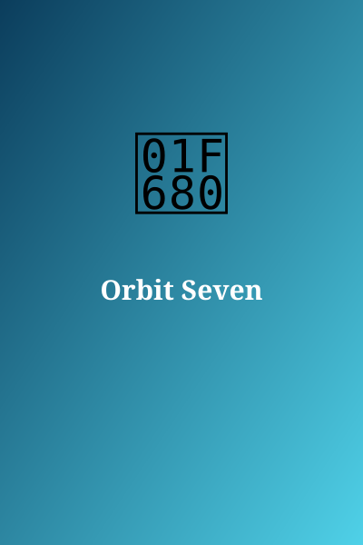

Orbit Seven
Author: Dr. L. Aquino
Genre: Sci-Fi
Synopsis: A lone engineer repairs a station that remembers her.
Chapter 1: Hello, Mara

The station lights flickered on as Mara entered. 'Welcome back,' said the voice. She had never been here before.
To be continued...